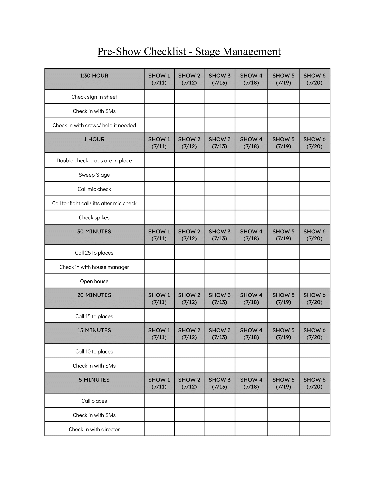
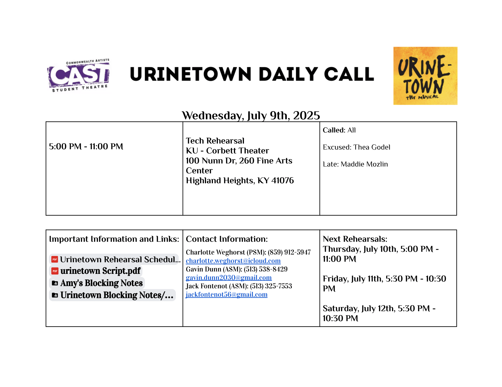
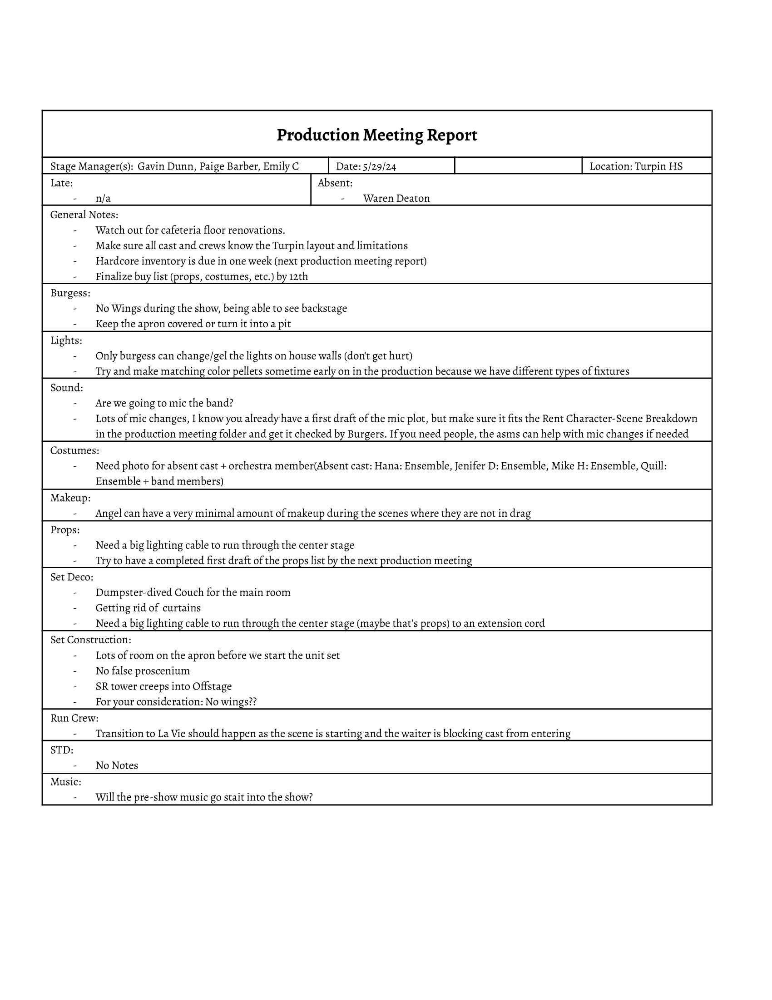
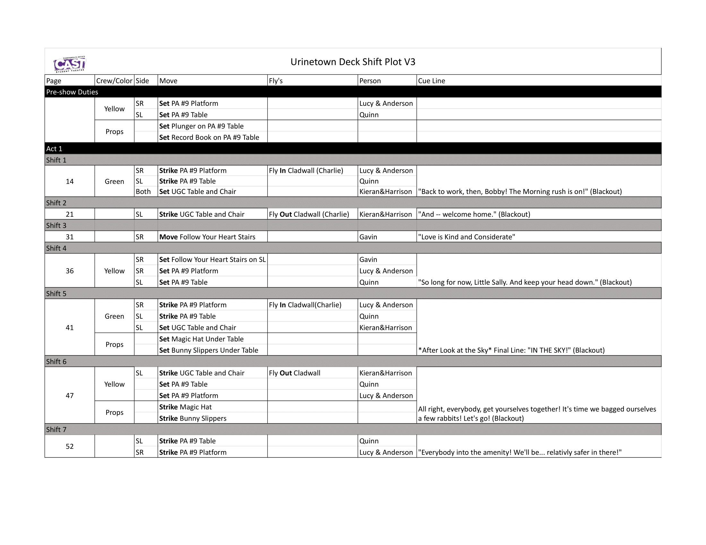
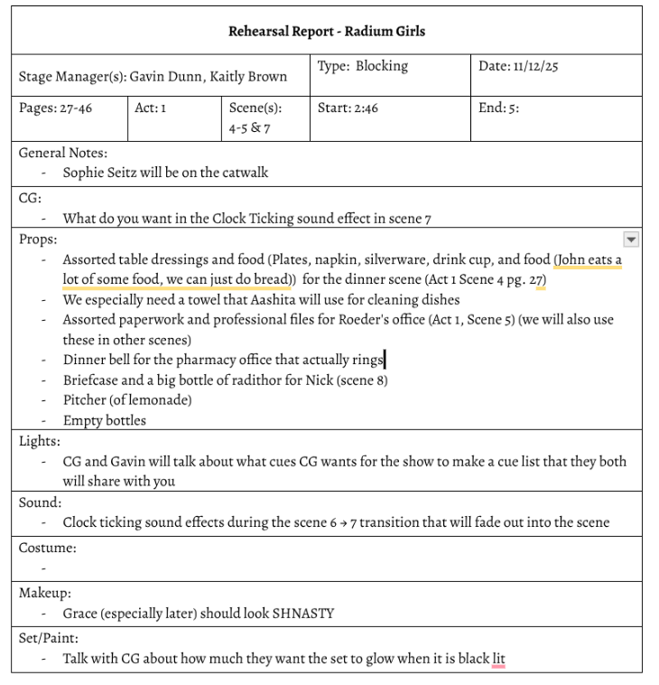

GALLERY
Download Resume

The final page from My Play That Goes Wrong Call Script.

Taping the Floor to paint for The Great Gatsby.

Pre-show check list for Urinetown

Me after hangning back wall for The Great Gatsby.

A Sample Daily Call for Urintown.

Me Calling The play that goes Wrong in a blue light

The final page from My Play That Goes Wrong Call Script.

My Set Design for the Crucible.

The Run Crew Shift Plot for Urinetown.

A Rehersal Report from the Upcoming Radium Girls.